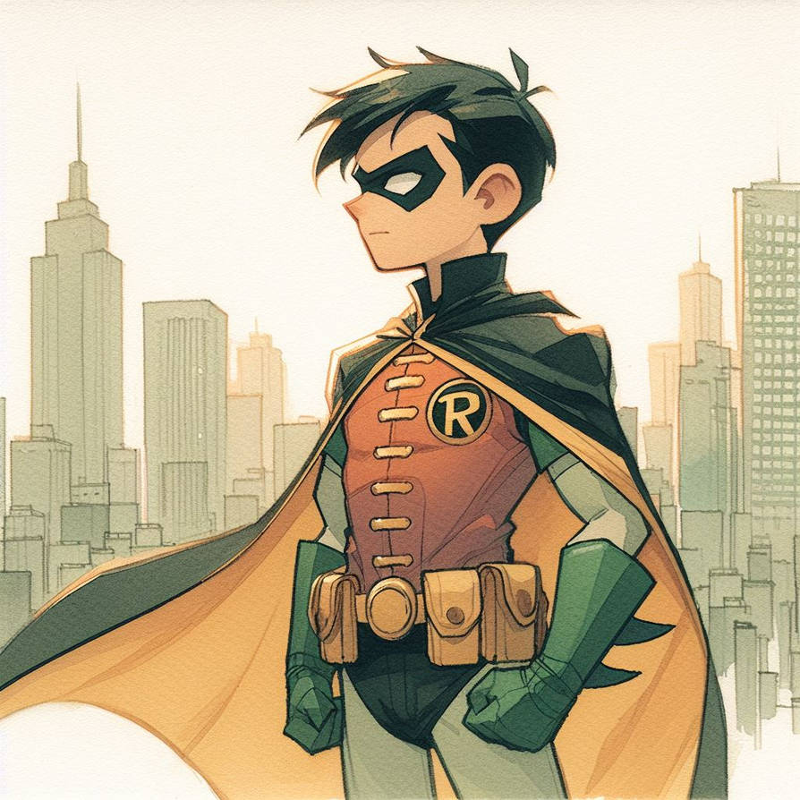

la infancia de robin, fue marcada por la perdida de sus padres Jhon y Mary Grayson, son asesinados por gangster, lo que lleva a Bruce Wayne a adoptarlo como su ayudante. Dick es entrenado por Bruce en diferentes tecnicas de combate y se convierte en compañero de batman, conocido como Robin.
inicio adolescencia adultez